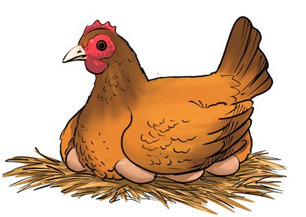
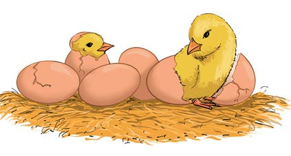
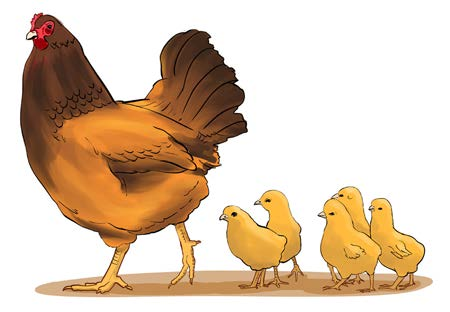

Reproduction
All living things reproduce. Reproduction enables living things or organisms to increase in number. Animals reproduce by giving birth to young ones or by laying eggs that hatch into young ones. Animals that reproduce by giving birth to youngs include human being, goat, bat and cat. Animals that lay eggs which hatch into youngs include chicken, snake, lizard and frog. Figure 7 shows reproduction in chicken. Plants reproduce using seeds or other means, including cuttings from stems or roots from mature plants. Reproduction is important for the continuity of generations.



Figure 7: Reproduction